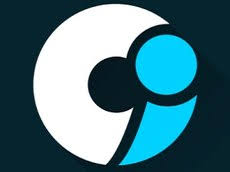

CI-UFPB · Orientação Vocacional
Decifrandoo Futuro.
A jornada pelos 4 pilares do Centro de Informática da UFPB — e como eles vão moldar o mundo.
Ciência da Computação
|
Eng. Computação
|
CDIA
|
Eng. Robótica
Ato I · Despertar
"
Computação é
a nova Medicina.
Impacto social comparável · Notas de corte crescentes · Carreiras que constroem o futuro
Ato I · Despertar
O Sistema Operacional
da Vida
- Saúde
- IA no diagnóstico, robótica cirúrgica, prontuários inteligentes
- Segurança
- Criptografia, monitoramento preditivo, ciberdefesa nacional
- Transporte
- Veículos autônomos, controle de tráfego, logística inteligente
Ato I · Despertar
"
Não é sobre consertar
computadores.
É sobre projetar a realidade.
Ato I · Despertar
O Choque
de Realidade
- A curva de aprendizagem é íngreme — e isso é completamente normal
- O que esperar no início
- Cálculo, Álgebra Linear, Lógica Matemática logo no 1º período
- Sensação de estar perdido é compartilhada por todos os ingressantes
- A virada
- Quem persiste domina ferramentas que 99% das pessoas nunca verão
- A paciência no início vale uma carreira global
Ato I · Despertar
A Recompensa
da Persistência
R$30k+
Engenheiros de Software
R$25k+
Cientistas de Dados
100%
Remoto global possível
- Google, Amazon, Meta — contratam talentos brasileiros sem sair do país
- Você resolve problemas que afetam milhões de pessoas por dia
Ato II · Ciência da Computação
A Ciência por Trás
da Computação
- Breve história
- 1936 — Alan Turing cria o modelo teórico do computador moderno
- 1970s — Surge a Internet; computação se torna rede global
- Hoje — IA, Computação Quântica, Cloud Computing
- O que é CC?
- Estudo formal de algoritmos, estruturas de dados e sistemas computacionais
Ato II · Ciência da Computação
Programação &
Engenharia de Software
- Linguagens de programação
- Python, Java, C++, Rust, JavaScript — cada uma com seu domínio
- Engenharia de Software
- Projetar sistemas grandes, confiáveis e escaláveis
- Metodologias ágeis: Scrum, Kanban, DevOps
- Do problema ao produto
- Análise → Modelagem → Código → Teste → Deploy → Monitoramento
Ato II · Ciência da Computação
A Importância
da Matemática
- Por que matemática importa tanto?
- Algoritmos são matemática aplicada em código
- Criptografia depende de teoria dos números
- Gráficos 3D dependem de álgebra linear
- Fundamentos do curso
- Cálculo · Probabilidade · Lógica · Teoria dos Grafos
- Sem matemática sólida, não há computação profunda
Ato II · Ciência da Computação
Algoritmos — o Coração
da Computação
- O que é um algoritmo?
- Sequência finita de instruções para resolver um problema
- No cotidiano
- Google Search — PageRank ordena bilhões de páginas em ms
- GPS — Dijkstra encontra o menor caminho em milissegundos
- Netflix — recomendação personalizada via machine learning
- Complexidade: O(n), O(log n), O(n²)
- Eficiência é a diferença entre milissegundos e horas
Ato II · Ciência da Computação
Da Teoria
à Prática
- Como a abstração vira código real
- Teoria dos grafos → mapas e redes sociais
- Autômatos → compiladores e buscas de texto
- Otimização → logística e supply chain globais
- Processamento Digital de Imagens (PDI)
- Reconhecimento facial, diagnóstico médico, veículos autônomos
Ato II · Ciência da Computação
Mercado de Trabalho
Engenheiro de Software
Backend / Frontend
Cloud & DevOps
Sistemas distribuídos
R$ 10k – R$ 28k
Pesquisador / Cientista
Algoritmos avançados
Computação Quântica
IA & NLP
R$ 12k – R$ 35k+
Empreendedor Tech
Startups de Software
SaaS & Plataformas
Open Source
Potencial ilimitado
Ato III · Eng. da Computação
O Mestre
do Hardware
- Onde código e circuito se encontram
- CC cria algoritmos. Eng. Computação os executa no silício
- O que estuda?
- Arquitetura de processadores, sistemas embarcados, redes, eletrônica
- A filosofia
- Entender o que acontece "sob o capô" — do transístor ao SO completo
Ato III · Eng. da Computação
A Física
da Computação
- Por que física importa?
- Transistores seguem leis quânticas — Lei de Moore
- Dissipação de calor limita a velocidade dos chips
- Eletromagnetismo governa toda comunicação sem fio
- Base do curso
- Física I, II, III · Circuitos Elétricos · Eletrônica Analógica
- Resultado: engenheiro que projeta chips, placas e sistemas completos
Ato III · Eng. da Computação
Sistemas Embarcados —
Inteligência Invisível
- Pacemaker — controla batimentos sem intervenção humana
- Aviões — piloto automático via microcontroladores
- Satélites — sistemas de bordo resilientes a falhas
- Ferramentas
- Arduino, Raspberry Pi, FPGAs, microcontroladores ARM
- O desafio máximo
- Código que não pode travar — vidas dependem disso
Ato III · Eng. da Computação
Internet
das Coisas (IoT)
- O mundo físico conectado
- 40+ bilhões de dispositivos conectados até 2030
- Aplicações
- Casas inteligentes · Cidades inteligentes · Indústria 4.0
- Agricultura de precisão · Saúde conectada
- Desafios de IoT
- Segurança, latência, consumo de energia mínimo
- Protocolos: MQTT, LoRaWAN, Zigbee, 5G
Ato III · Eng. da Computação
Arquitetura
de Computadores
- Como um processador realmente funciona
- Pipeline, cache L1/L2/L3, branch prediction
- Paralelismo
- Múltiplos núcleos · GPUs · Processamento vetorial (SIMD)
- Hierarquia de memória
- Registradores → Cache → RAM → SSD → Nuvem
- Otimizar código 10× começa por entender o hardware
Ato III · Eng. da Computação
Mercado de Trabalho
Engenheiro de Hardware
Projeto de chips (VLSI)
Sistemas embarcados
Eletrônica industrial
R$ 9k – R$ 25k
Especialista IoT / 5G
Integração de sensores
Redes de baixa potência
Edge Computing
R$ 8k – R$ 22k
Engenheiro de Sistemas
Drivers & Firmware
Kernel Linux
Segurança de hardware
R$ 10k – R$ 30k
Ato IV · CDIA
Big Data — o Petróleo
do Século XXI
- Volume, Velocidade, Variedade, Veracidade
- Facebook: 2,5 quintilhões de bytes gerados por dia
- Cada clique, compra e localização é um dado coletado
- Por que isso importa?
- Empresas que usam dados decidem 5× mais rápido
- Tecnologias
- Hadoop, Apache Spark, Kafka, Data Lakes, Data Warehouses
- Python + SQL são a espinha dorsal do profissional de dados
Ato IV · CDIA
LGPD —
Proteção de Dados
- Lei Geral de Proteção de Dados (2020)
- Inspirada no GDPR europeu — direitos do cidadão sobre seus dados
- O que muda para as empresas?
- Consentimento explícito para coleta de dados pessoais
- Notificação obrigatória de vazamentos
- Multas de até 2% do faturamento (máx. R$ 50 milhões)
- O profissional de dados e a LGPD
- Anonimização, pseudonimização, governança de dados
Ato IV · CDIA
Inteligência Artificial —
O Impacto
- IA está redefinindo profissões
- ChatGPT, Copilot, DALL-E — criatividade aumentada por máquinas
- Radiologistas assistidos por IA diagnosticam 30% mais rápido
- Ameaças e oportunidades
- Jobs em risco: triagem básica, dados repetitivos
- Jobs criados: Engenheiro de Prompt, AI Trainer, LLM Ops
- No Brasil
- Mercado de IA deve gerar R$ 150 bilhões até 2030 (McKinsey)
Ato IV · CDIA
Dados alimentam IA.
IA analisa Dados.
- O ciclo virtuoso
- Dados → Treinamento → Modelo → Predição → Novos dados
- Machine Learning na prática
- Regressão, Classificação, Clustering, Redes Neurais
- Ferramentas do cientista de dados
- Python (Pandas, Scikit-learn, TensorFlow, PyTorch)
- Jupyter Notebooks · Power BI · Tableau
Ato IV · CDIA
Modelagem
Preditiva
- Prever antes que aconteça
- Crises financeiras — modelos anteciparam sinais da crise de 2008
- Epidemias — modelos SIR previram curvas da COVID-19
- Comportamento social
- Sistemas de recomendação preveem o que você comprará amanhã
- Análise de sentimento monitora redes sociais em tempo real
- Na saúde
- Modelos preditivos reduzem 25% das reinternações hospitalares
Ato IV · CDIA
Mercado de Trabalho
Cientista de Dados
ML / Deep Learning
NLP & Computer Vision
Modelagem estatística
R$ 9k – R$ 28k
Engenheiro de Dados
Pipelines ETL
Big Data (Spark)
Cloud (AWS/GCP/Azure)
R$ 10k – R$ 30k
Analista de BI
Dashboards & KPIs
SQL avançado
Storytelling com dados
R$ 6k – R$ 18k
Ato V · Eng. de Robótica
Robótica — a Nova
Fronteira
- Por que robôs importam hoje
- Indústria 4.0: 85% das tarefas repetitivas serão automatizadas até 2030
- Cirurgia Da Vinci: precisão milimétrica impossível para humanos
- Curiosity, Perseverance — ciência espacial sem astronautas
- No Brasil
- Agro usa robôs para colheita, plantio e monitoramento de safras
- Curso mais novo do CI-UFPB — alta demanda, baixa oferta
Ato V · Eng. de Robótica
Eng. Computação
vs Eng. Robótica
Eng. Computação
- Hardware genérico
- Foco em chips e redes
- Software de baixo nível
- Embedded systems
- → Eng. Computação
Ambos Compartilham
- Programação C/C++
- Sistemas embarcados
- Eletrônica digital
- Controle de hardware
- Algoritmos eficientes
Eng. Robótica
- Mecânica + Elétrica
- Cinemática de robôs
- Visão computacional
- Atuadores / sensores
- → Eng. Robótica
Ato V · Eng. de Robótica
Áreas de Estudo
Específicas
- Cinemática e Dinâmica
- Modelagem matemática de movimentos — posição, velocidade, aceleração
- Controle de Sistemas
- Controladores PID, lógica fuzzy, controle adaptativo
- Visão Computacional
- OpenCV, YOLO, detecção de objetos em tempo real
- ROS (Robot Operating System)
- Framework padrão mundial para desenvolvimento de robôs
Ato V · Eng. de Robótica
Sensores e Visão
Computacional
- Como o robô sente o mundo
- LIDAR — mapeamento 3D por laser (carros autônomos)
- Ultrassom — detecção de obstáculos a curta distância
- IMU — giroscópio + acelerômetro → equilíbrio e orientação
- Visão por câmera
- Câmeras estéreo simulam visão binocular humana
- Profundidade inferida via redes neurais convolucionais
- Fusão de sensores
- Múltiplos sensores = robustez e redundância máximas
Ato V · Eng. de Robótica
IA na Robótica
- Robótica moderna é inseparável da IA
- Aprendizado por Reforço (RL)
- Boston Dynamics: cão robótico aprendeu a andar por simulação + RL
- Redes Neurais em Robótica
- Navegação autônoma, manipulação de peças, detecção de objetos
- Robótica Colaborativa (Cobots)
- Robôs que trabalham ao lado de humanos com segurança total
- Futuro: cirúrgicos, de resgate, domésticos, exploração espacial
Ato V · Eng. de Robótica
Laboratórios do
Centro de Informática
nossas experiências
Ato V · Eng. de Robótica
Mercado de Trabalho
Engenheiro Robótico
Robôs industriais
Automação de processos
Integração de sistemas
R$ 10k – R$ 30k
Especialista IA/Robótica
Deep Reinforcement Learning
Visão computacional
Robótica médica
R$ 12k – R$ 40k+
P&D / Pesquisador
Universidades & FAPESQ
Agências espaciais
Big Techs (Boston Dynamics)
R$ 8k – R$ 25k
Ato VI · Grand Finale
O Mercado Global
de Tecnologia
R$600bi
Setor TI Brasil 2024
500k+
Vagas abertas sem profissionais
- Trabalho remoto mudou o jogo
- Google, Amazon, Meta — contratam talentos BR sem sair do país
- Salário em dólar — poder de compra multiplicado
- Resistência a crises
- Pandemia: único setor com crescimento acelerado em 2020–21
Ato VI · Grand Finale
Projeções
de Futuro
- Computação Quântica
- IBM, Google e Microsoft correndo para o primeiro quantum advantage
- Irá quebrar toda criptografia atual — e criar a próxima geração
- IA Geral (AGI)
- O maior desafio científico da humanidade
- Biotecnologia + Computação
- CRISPR, sequenciamento de DNA, medicina personalizada por algoritmos
- Metaverso e Web3
- Novas plataformas sociais e econômicas inteiramente digitais
Ato VI · Grand Finale
Guia de Escolha —
Qual Curso é Seu?
Cientista
(CC)
- Ama lógica pura
- Algoritmos & IA
- Abstração matemática
- Pesquisa & inovação
- → Ciência da Comp.
Construtor
(Eng. Comp.)
- Ama hardware
- Circuitos & chips
- Sistemas embarcados
- Física + Programação
- → Eng. Computação
Estrategista
(CDIA)
- Ama dados & padrões
- Decisões com impacto
- IA aplicada
- Negócios + Tecnologia
- → CDIA
Criador
(Robótica)
- Ama máquinas físicas
- Automação & robôs
- Mecânica + Eletrônica
- IA encarnada
- → Eng. Robótica
Ato VI · Grand Finale
CI-UFPB —
Por que aqui?
- Centro de Informática da UFPB
- Um dos centros de pesquisa em computação mais reconhecidos do Nordeste
- Laboratórios de ponta
- Visão Computacional · Robótica · Redes · Segurança · IA
- Extensão e pesquisa
- Projetos com empresas, governo, FAPESQ e CNPq
- Comunidade viva
- Grupos de extensão, hackathons, ligas de programação competitiva
CI-UFPB · Orientação Vocacional · 2025
O futuro não acontece.
Ele é programado.
"Qual será a sua primeira linha de código?"
Centro de Informática da UFPB